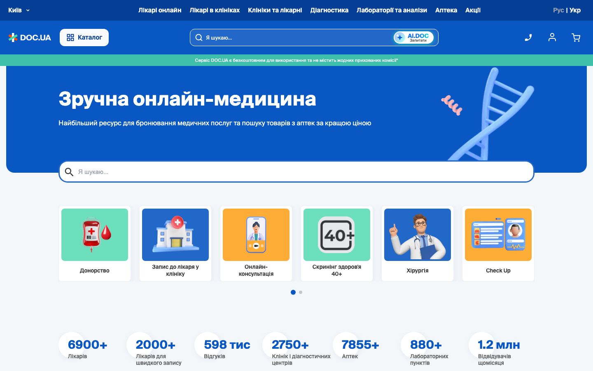
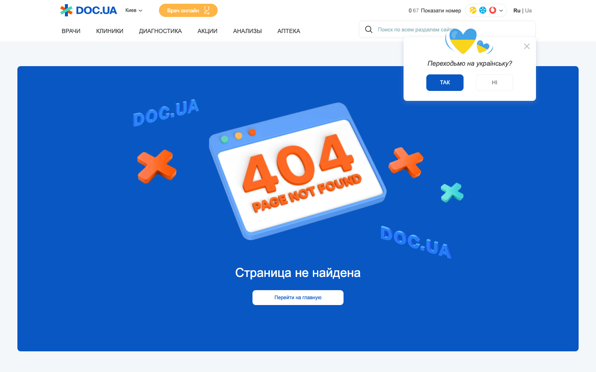
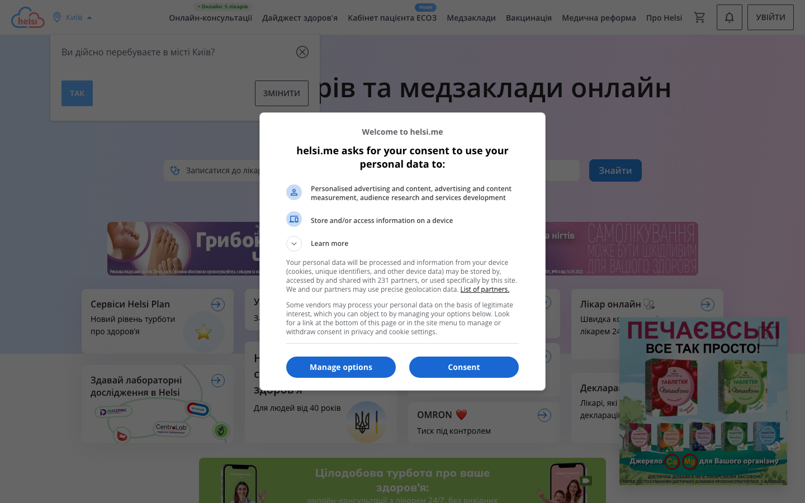
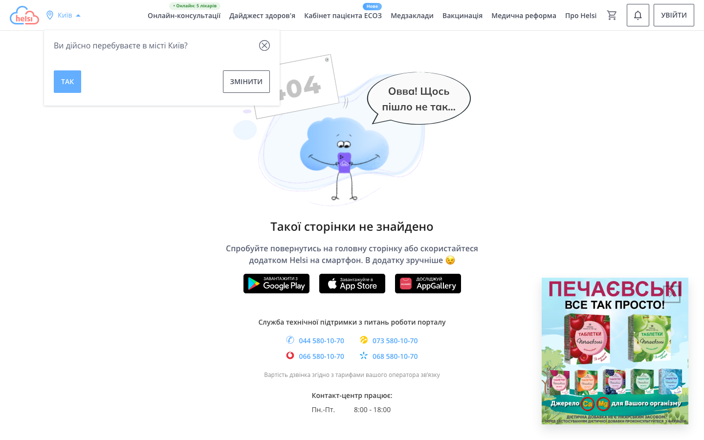
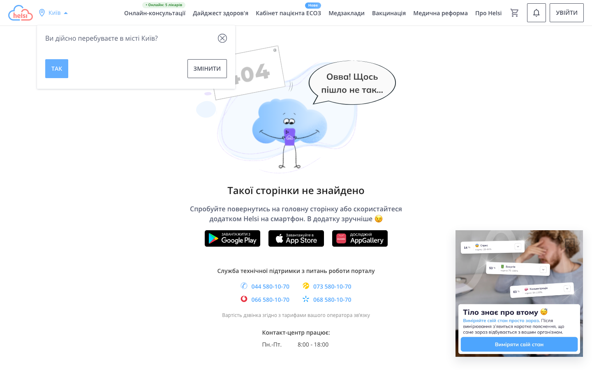
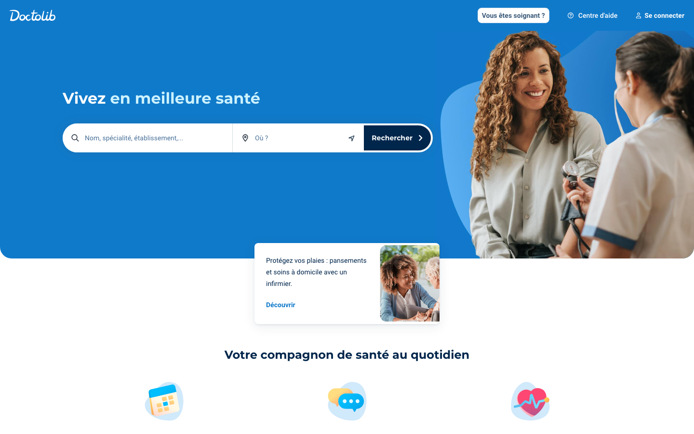
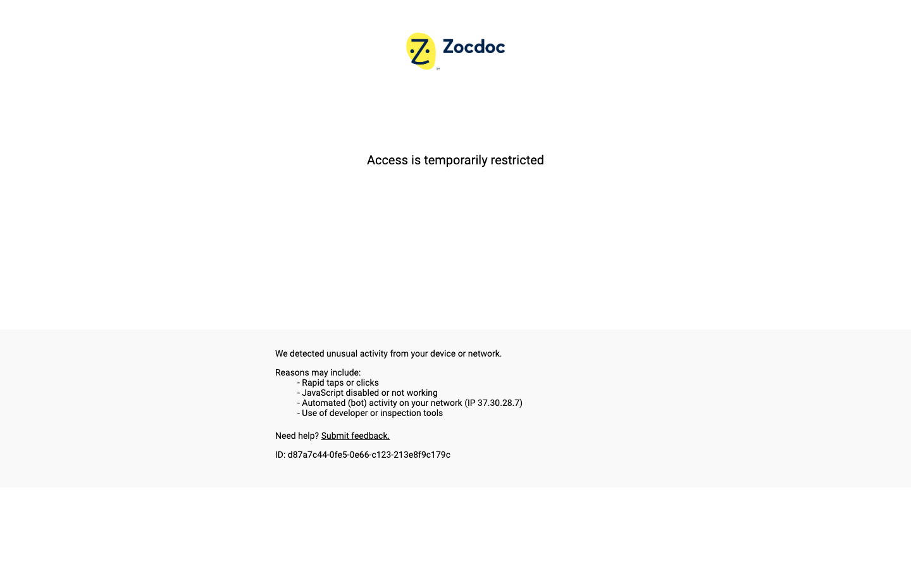
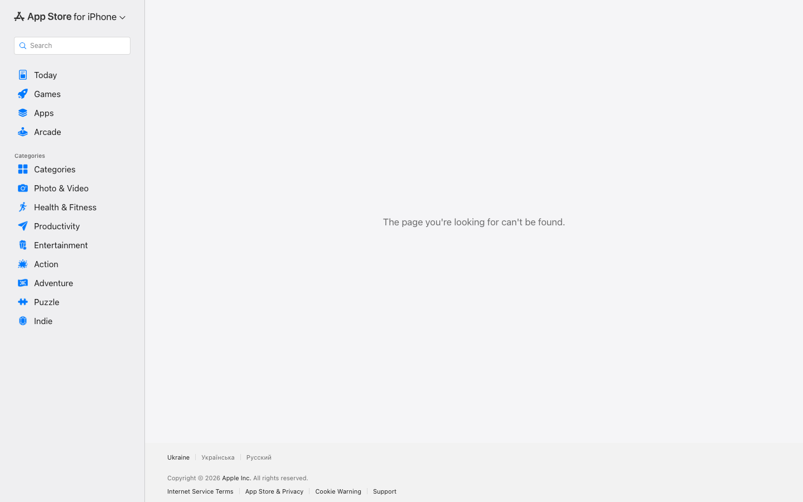

Скріни










Порівняльна таблиця
| Вісь | Doc.ua | Helsi.me | MedMe | Zdravo.ua | Zocdoc |
|---|---|---|---|---|---|
| Аудиторія | Пацієнти + клініки + лаб. + аптеки; вся Україна (40+ міст) | Пацієнти + лікарі; державні клініки UA | Пацієнти; акцент на аптеках і е-рецептах | Пацієнти Київ + великі міста | Пацієнти + лікарі; США |
| Основа продукту | Агрегатор: лікарі, клініки, аптеки, лаборат. | Державна е-медична система ЕСОЗ — офіційна платформа МОЗ | Мобільний застосунок: аптеки + запис + е-рецепти | Каталог клінік + запис онлайн | Маркетплейс лікарів з real-time слотами |
| Ключовий механізм | Пошук → картка лікаря → вибір часу → підтвердження | Реєстр МОЗ → запис через ЕСОЗ → електронна карта | Запис + замовлення ліків в одному потоці; е-рецепт | Пошук клініки → запис → телефонне підтвердження | Страховка → лікар → слот → миттєве підтвердження |
| Довіра | 6 900+ лікарів, 1.2 млн відвід./міс, верифіковані профілі | Державна верифікація — лікар = реєстр МОЗ | Партнерство з аптечними мережами | Рейтинги клінік, відгуки користувачів | Відгуки лише з підтвердженим записом; оцінка, освіта, страховка |
| Монетизація | Комісія + реклама клінік + аптека (партнерська) | Безкоштовно для пацієнтів; держфінансування | Freemium + монетизація через аптеки | Комісія з запису, реклама клінік | Підписка від лікарів ($300+/міс); пацієнти — безкоштовно |
Вимір довіри — досвідчений дипломований спеціаліст
Верифікація ліцензії
Чи перевіряє платформа ліцензію і показує це як видимий UI-сигнал — бейдж або підпис «перевірено»
Стаж (числом)
Роки досвіду числом прямо на профілі — без кліку у деталі
Академічний статус
Категорія (перша / вища), к.м.н. / д.м.н., вчене звання, посада
Рейтинг + к-ть відгуків
Чи показано скільки відгуків, як рейтинг пояснений пацієнту — чи довіряти числу
Gate відгуків
Відгук залишає лише той, хто реально побував на прийомі (gate mechanism)
Сертифікати і спеціалізація
Окремі сертифікати, курси, вузькі спеціальності — видно без копання у вкладки
Лічильник прийомів
Соціальний доказ: «5 000 прийомів через платформу» — видимо на картці
Trust на картці
Ключові сигнали довіри видні в каталозі без відкриття повного профілю
| Критерій | Doc.ua | Helsi.me | Zocdoc | Zdravo.ua | MedMe |
|---|---|---|---|---|---|
| C1 · Верифікація ліцензії | 3 | 1 | 5 | н/д | н/д |
| C2 · Стаж (числом) | 5 | 3 | 3 | н/д | н/д |
| C3 · Академічний статус | 5 | 2 | 4 | н/д | н/д |
| C4 · Рейтинг + к-ть відгуків | 4 | 4 | 5 | н/д | н/д |
| C5 · Gate відгуків | 3 | 2 | 5 | н/д | н/д |
| C6 · Сертифікати | 4 | 2 | 4 | н/д | н/д |
| C7 · Лічильник прийомів | 2 | 3 | 3 | н/д | н/д |
| C8 · Trust на картці | 4 | 3 | 5 | н/д | н/д |
| Сума / 40 | 30 | 20 | 34 | — | — |
Стаж числом + академічний статус
«15 років · Вища категорія · к.м.н.» — три рядки, що зчитуються за 2 секунди. Клініка подає дані при підключенні. Найдешевший trust-сигнал.
перенести в MVPЗначок «Перевірено платформою»
Бейдж верифікованої ліцензії через реєстр МОЗ (публічний API). Прибирає сумнів «а він справжній лікар?». Технічно: 1 day. Ключовий gate для нового гравця.
перенести в MVPGate-механізм відгуків
Відгук = тільки якщо запис через dock + прийом підтверджено лікарем. Статус «завершений прийом» → unlock форми. Кейс Helsi 2023 доводить: без gate відгуки нічого не варті.
перенести в MVPAI-синтез відгуків
Потребує ~500–1000 відгуків на лікаря, щоб рецензія мала зміст. На MVP більшість лікарів матимуть 0–10 відгуків — AI видасть беззмістовний текст, що шкодить довірі більше, ніж допомагає.
Helsi запустив синтез до закриття проблеми фейкових записів: AI масштабує шум, а не сигнал. Без gate (C5) — AI-рецензія ненадійного = ненадійна вдвічі. Ресурс краще вкласти в C5, не в синтез.
Патерни
Пошук — головний вхід
Всі п'ять продуктів ставлять пошуковий рядок або фільтр-спеціальність у hero. Перший крок пацієнта — «знайти лікаря», не «дізнатись про продукт». Лендінг у конкурентів = інтерфейс, а не маркетинг.
Довіра через числа і верифікацію
Doc.ua: «6 900+ лікарів». Zocdoc: тільки відгуки з підтвердженим записом. Helsi: держ. реєстр МОЗ. Кожен вирішує «чи можна довіряти» по-своєму — але всі вирішують.
Застосунок — основний канал
Всі мають App Store / Google Play на головній або в footer. Helsi: «в додатку зручніше». Продукт = застосунок, сайт = вхідна точка. dock має виглядати як маркетинг застосунку.
Ринок визначає монетизацію
Zocdoc монетизує через лікарів (підписка), Doc.ua — через комісію, Helsi — через державу. Це повністю міняє UX-пріоритети: Zocdoc оптимізує для лікаря, Doc.ua — для обсягу, Helsi — для покриття.
Широта vs. глибина
Doc.ua бере широтою — аптека, лаби, аналізи, хірургія. Zocdoc бере глибиною — один flow, але ідеально відточений. dock: вузько, але кращий UX.
Держава vs. ком'юніті vs. масштаб
Helsi довіряє через МОЗ. Zocdoc — через верифіковані відгуки. Doc.ua — через масштаб. dock не має ні держстатусу, ні масштабу → довіра будується через UX-якість і прозорість профілів.
Search-First
Велике поле пошуку в центрі. Аудиторія знає чого хоче. Ламається: каталог порожній.
Guided Wizard
Питання → відповідь → результат. Підходить новачкам. Ламається: 5+ кроків = відтік.
не для dockAvailability-First
«Хто вільний сьогодні?» — слоти, потім лікар. Як OpenTable.
якщо є базаMap-First
Карта Києва з маркерами клінік. Підходить, якщо локація критична. Ламається на мобільному.
App Showcase
Мокап застосунку в hero, скрін змінюється при скролі. Лендінг = маркетинг, не продукт.
рекомендовано